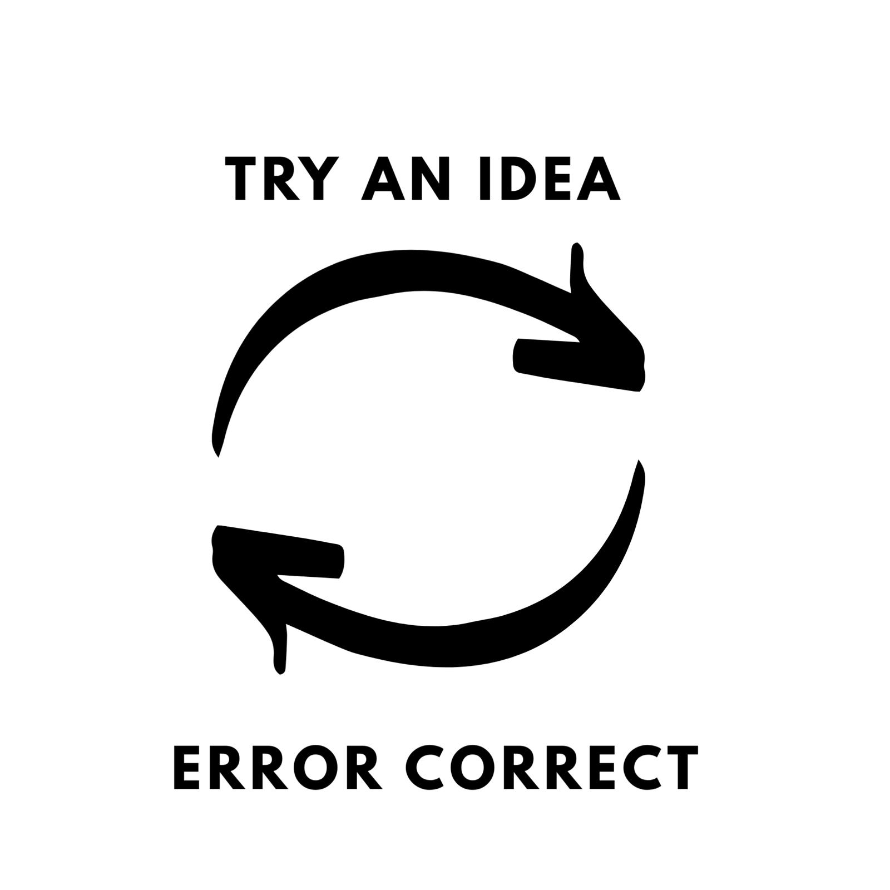

September 2020
How likely is it that a solution to a problem is optimal? Unless it's a well-behaved mathematical problem, it's
stupefyingly improbable [1]. How likely is it that it's the most impactful problem that could be solved right
now? Unless the opportunity cost of solving other problems has been carefully considered, it's also
improbable.
We're therefore continually trying out new ideas and error correcting -- on our solution, and on the problem
itself. Surprisingly, a lot of good advice amounts to one thing: speeding up the trial and error loop.

When writing software, it's best to build the simplest end-to-end system as fast as possible. This
leads you to ask the right questions earlier, like "do we really want to solve X, or do we actually want to
solve Y?", "do we have the right expertise to solve problem Y?" and "how do we even measure our progress on
problem Y?". The faster the loop, the better.
“The question is, how fast can you discover that the thing you’re working on is the wrong thing to be working
on.”
― Astro Teller, Captain of Moonshots at X
Maybe you've found it to be true in conversation. When you're explaning a topic, it's better to give a minute
summary and elaborate if they're interested than to dive into detail at the outset.
Or maybe you've found it to be true if you've written software. How much easier is it to write
software with a REPL than without? What about when your program takes minutes to compile? It can be
really frustrating when you're in a slow loop.
Part of reaching a good solution is not getting discouraged after failing over and over. Paul Graham has often
said the best predictor of start up success is how determined the founders are [2]. Carol Dweck's point on
growth mindset is essentially making the point that everyone's first iterations look bad. The greats are those
that just did lots of cycles.
Have a fast trial and error loop, and don't give up.
Footnotes
[1] Sometimes mathematics allows for analytic solutions. This is
quite rare, though. For example, there's an analytic solution for the parameters in linear regression (the
normal equations), but as soon as you add a non-linear activation function (e.g. the
logistic function), there's no longer an anlytic solution. Instead, numerical methods are used (e.g. gradient
descent), which uses trial and error to find successively better parameters.
[2] http://www.paulgraham.com/determination.html
|